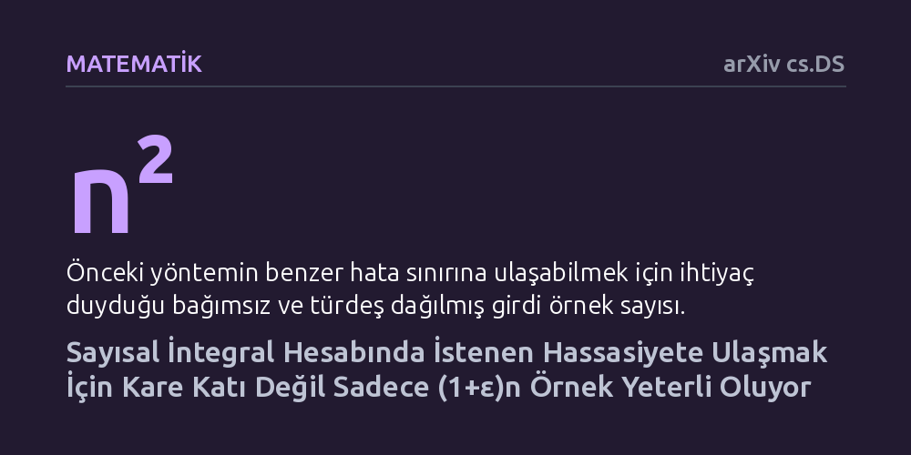

MATEMATIK · arXiv cs.DS · 2026-09-12
Araştırmacılar, çok boyutlu integralleri hesaplarken Monte Carlo ve Yarı-Monte Carlo yaklaşımlarını birleştiren yöntemin aşırı örneklem gereksinimini inceledi. Geliştirilen yeni algoritma, önceki karesel örnek patlamasını aşarak gelişmiş hata sınırına neredeyse doğrusal örneklemle ulaşılabileceğini kanıtladı.
Yüksek boyutlu karmaşık integrallerin çözümünde yüksek doğruluğa ulaşmak için gereken veri ve işlem miktarının karesel olarak artmak zorunda olmadığını gösterir.

Matematik ve hesaplamalı bilimlerde çok sayıda değişken içeren fonksiyonların alanını veya ortalama değerini tam olarak hesaplamak çoğu zaman imkansızdır. Bu gibi durumlarda araştırmacılar sayısal yaklaşımlara başvurur. En temel iki yaklaşımdan ilki olan klasik Monte Carlo yöntemi, incelenen uzaydan tamamen rastgele noktalar seçerek sonuca yaklaşmaya çalışır; uygulanması ve genelleştirilmesi son derece kolaydır ancak hata payını düşürmek için çok fazla örneğe ihtiyaç duyar.
İkinci yaklaşım olan Yarı-Monte Carlo ise rastgeleliği bir kenara bırakıp noktaları uzaya olabildiğince dengeli ve homojen bir şekilde yerleştirmeyi hedefler. Belirli kurallı fonksiyonlarda çok daha hızlı ve hatasız sonuçlar verse de, fonksiyon yüzeyinin düzensizleştiği durumlarda klasik teorik güvenceler yetersiz kalır. Bu nedenle matematikçilerin uzun süredir peşinde koştuğu temel amaç, her iki yöntemin üstün yanlarını tek bir çatıda birleştirmektir.
Yakın zamanda Bansal ve Jiang, ayrıklık teorisindeki aktarım ilkesini kullanarak iki yaklaşımı birbirine bağlayan ve bağımsız rastgele örneklerle çalışan yeni bir yöntem sundu. Bu yöntem, klasik Koksma-Hlawka eşitsizliğinin katı sınırlarını aşıyor ve çok daha esnek bir pürüzsüzlük ölçüsüne dayanarak hata payını düşürebiliyordu. Ne var ki bu kuramsal ilerlemenin çok ciddi bir maliyeti ortaya çıktı: Algoritma, hedeflenen n adet dengeli noktayı elde edebilmek için girdi olarak n'in karesi kadar rastgele örneğe ihtiyaç duyuyordu.
Bu karesel patlama, aktarım ilkesini temel alan tüm yaklaşımların kaçınılmaz bir parçasıydı. Örneğin nihai hesaplamada bin adet kaliteli nokta kullanmak istediğinizde, algoritmaya tam bir milyon rastgele örnek beslemeniz gerekiyordu. Bu durum, yöntemin kuramsal zarafetine rağmen büyük ölçekli ve yüksek boyutlu problemlerdeki pratik kullanım alanını ciddi şekilde daraltıyordu.
Ezeunala, Jha ve Jiang bu çalışmada söz konusu karesel engeli tamamen aşmayı başardı. Yazarlar, aktarım ilkesine bağlı kalmak yerine literatürde 'çevrim içi Haar-inceltme' olarak bilinen dinamik süzme tekniğinin yeni varyantlarını kurguladı.
Elde edilen matematiksel ispata göre, Bansal ve Jiang'ın sunduğu gelişmiş hata garantilerine ulaşmak ve düşük sapmalı nokta dizileri üretmek için n'in karesi kadar değil, sıfırdan büyük herhangi bir sabit epsilon değeri için yalnızca (1 + ε)n adet rastgele örnek yeterli olmaktadır. Başka bir deyişle, hedeflenen nokta sayısının sadece küçük bir kesri kadar fazlasını toplayarak aynı yüksek hassasiyet güvencesine ulaşmak mümkündür.
Bu sonuç, rastgele örnek havuzlarından yüksek kaliteli ve homojen alt kümeler ayıklamanın örneklem maliyetine dair kuramsal algıyı kökten değiştirmektedir. Matematikçilerin açık bir problem olarak tartıştığı karesel büyümenin zorunlu bir kısıtlama olmadığı netlik kazanmıştır.
Böylece hem rastgele örneklemenin getirdiği esneklik korunmakta hem de yapılandırılmış örneklemenin getirdiği yüksek doğruluk, neredeyse hiç veri israfı olmadan elde edilebilmektedir. Bu durum, yüksek boyutlu finans modellerinden fiziksel simülasyonlara kadar birçok hesaplamalı alanda algoritmik verimlilik için güçlü bir teorik zemin sunmaktadır.